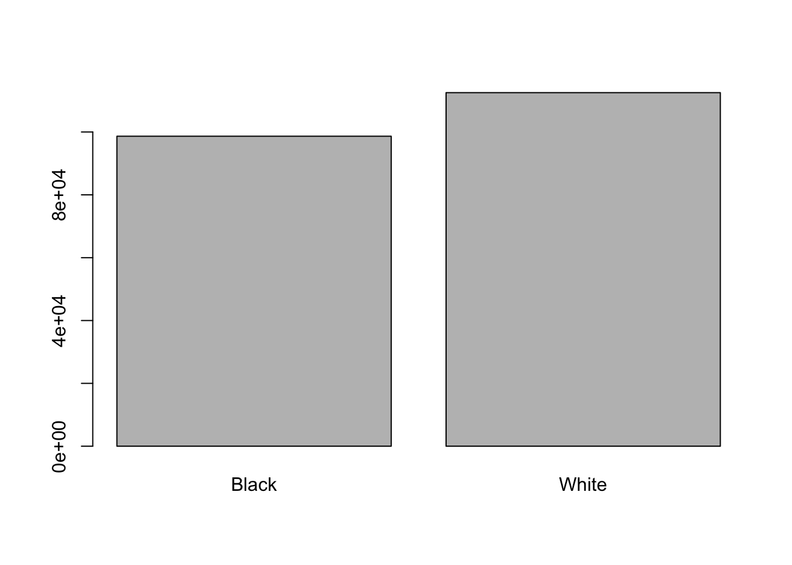

Chapter 3 Working with tabular data in R
Learning Objectives
- Load external data from a .csv file into a data frame in R with
read_csv()- Find basic properties of a data frames including size, class or type of the columns, names of rows and columns by using
str(),nrow(),ncol(),dim(),length(),colnames(),rownames()- Use
head()andtail()to inspect rows of a data frame.- Generate summary statistics for a data frame
- Use indexing to select rows and columns
- Use logical conditions to select rows and columns
- Add columns and rows to a data frame
- Manipulate categorical data with
factors,levels()andas.character()- Change how character strings are handled in a data frame.
- Format dates in R and calculate time differences
- Use
df$new_col <- new_colto add a new column to a data frame.- Use
cbind()to add a new column to a data frame.- Use
rbind()to add a new row to a data frame.- Use
na.omit()to remove rows from a data frame withNAvalues.
Data frames are the de facto data structure for tabular data in R, and what we use for data processing, statistics, and plotting.
A data frame is the representation of data in the format of a table where the columns are vectors that all have the same length. Data frames are analogous to the more familiar spreadsheet in programs such as Excel, with one key difference. Because columns are vectors, each column must contain a single type of data (e.g., characters, integers, factors). For example, here is a figure depicting a data frame comprising a numeric, a character, and a logical vector.
Figure 3.1: Structure of a data frame
As we have seen above, data frames can be created by hand, but most commonly they are generated by the functions like read.csv(), read_csv() or read_table() and others. These functions essentiallly import the tables or spreadsheets from your hard drive (or the web). We will now demonstrate how to import tabular data using read_csv().
3.1 Importing tabular data
We will take a CSV file as example. What is a CSV file?
You may know about the Stanford Open Policing Project and we will be working with a sample dataset from their repository (https://openpolicing.stanford.edu/data/). The sample I extracted contains information about traffic stops for black and white drivers in the state of Mississippi during January 2013 to mid-July of 2016.
First, we are going to use the R function download.file() to download the CSV file
that contains the traffic stop data, and we will use read.csv() to
load into memory the content of the CSV file as an object of class data.frame.
To download the data into your local data/ subdirectory, run the following:
You are going to load the data in R’s memory using the function read_csv() from the readr package, which is part of the tidyverse; learn more about the tidyverse collection of packages (here)[https://www.tidyverse.org/]. readr gets installed as part as the tidyverse installation. When you load the tidyverse (library(tidyverse)), the core packages (the packages used in most data analyses) get loaded, including readr.
So lets make sure you have the tidyverse packages installed and loaded.
If you haven’t done so already run the installation of tidyverse like this:
Then load tidyverse into memory like this:
You may have noticed that when you loaded the tidyverse package that you received the following message:
── Conflicts ─────────────────────────────────────── tidyverse_conflicts() ──
✖ dplyr::filter() masks stats::filter()
✖ dplyr::lag() masks stats::lag()
ℹ Use the conflicted package to force all conflicts to become errors
This presents a good opportunity to talk about conflicts. Certain packages we load can end up introducing function names that are already in use by pre-loaded R packages. For instance, when we load the tidyverse package below, we will introduce two conflicting functions: filter() and lag(). This happens because filter and lag are already functions used by the stats package (already pre-loaded in R). What will happen now is that if we, for example, call the filter() function, R will use the dplyr::filter() version and not the stats::filter() one. This happens because, if conflicted, by default R uses the function from the most recently loaded package. Conflicted functions may cause you some trouble in the future, so it is important that we are aware of them so that we can properly handle them, if we want.
To do so, we can use the following functions from the conflicted package:
conflicted::conflict_scout(): Shows us any conflicted functions.conflict_prefer("function", "package_prefered"): Allows us to choose the default function we want from now on.
It is also important to know that we can, at any time, just call the function directly from the package we want, such as stats::filter().
Ok. With that out of the way you are now ready to load the data.
#> Rows: 211211 Columns: 11
#> ── Column specification ────────────────────────────────────────────────────────
#> Delimiter: ","
#> chr (8): id, state, county_name, police_department, driver_gender, driver_r...
#> dbl (1): county_fips
#> date (2): stop_date, driver_birthdate
#>
#> ℹ Use `spec()` to retrieve the full column specification for this data.
#> ℹ Specify the column types or set `show_col_types = FALSE` to quiet this message.If you were to type in the code above, it is likely that the read.csv() (note the dot!) function would appear in the automatically populated list of functions. This function is different from the read_csv() (note the underscore!) function, as it is included in the “base” packages that come pre-installed with R. Overall, read.csv() behaves similar to read_csv(), with a few notable differences. First, read.csv() coerces column names with spaces and/or special characters to different names (e.g. interview date becomes interview.date). Second, read.csv() stores data as a data.frame, where read_csv() stores data as a tibble. We prefer tibbles because they have nice printing properties among other desirable qualities. Read more about tibbles here.
The second statement in the code above creates a data frame but doesn’t output any data because, as you might recall, assignments (<-) don’t display anything. (Note, however, that read_csv may show informational text about the data frame that is created.)
So let’s check out the data! We can type the name of the object stops:
#> # A tibble: 211,211 × 11
#> id state stop_date county_name county_fips police_department
#> <chr> <chr> <date> <chr> <dbl> <chr>
#> 1 MS-2013-00001 MS 2013-01-01 Jones County 28067 Mississippi High…
#> 2 MS-2013-00002 MS 2013-01-01 Lauderdale Coun… 28075 Mississippi High…
#> 3 MS-2013-00003 MS 2013-01-01 Pike County 28113 Mississippi High…
#> 4 MS-2013-00004 MS 2013-01-01 Hancock County 28045 Mississippi High…
#> 5 MS-2013-00005 MS 2013-01-01 Holmes County 28051 Mississippi High…
#> 6 MS-2013-00006 MS 2013-01-01 Jackson County 28059 Mississippi High…
#> 7 MS-2013-00007 MS 2013-01-01 Jackson County 28059 Mississippi High…
#> 8 MS-2013-00008 MS 2013-01-01 Grenada County 28043 Mississippi High…
#> 9 MS-2013-00009 MS 2013-01-01 Holmes County 28051 Mississippi High…
#> 10 MS-2013-00010 MS 2013-01-01 Holmes County 28051 Mississippi High…
#> # ℹ 211,201 more rows
#> # ℹ 5 more variables: driver_gender <chr>, driver_birthdate <date>,
#> # driver_race <chr>, violation_raw <chr>, officer_id <chr>read_csv() assumes that fields are delimited by commas. For other delimiters (like semicolon or tab) check out the help: ?read_csv
Note that read_csv() loads the data as a so called “tibble”. A tibble is an extended form of R data frames (as an object of multiple classes tbl_df, tbl, and data.frame). This may sound confusing, but it is really not anything you typically need to deal with when working the data. In fact, it makes it a little more convenient.
As you may recall, a data frame in R is a special case of a list, and a representation of data where the columns are vectors that all have the same length. Because the columns are vectors, they all contain the same type of data (e.g., characters, integers, factors, etc.).
In this tibble you can see the type of data included in each column listed in an abbreviated fashion right below the column names. For instance, the state column is is of type character <chr>, the stop_date is in <date> format and county_fips are floating point numbers (abbreviated <dbl> for the word ‘double’).
3.2 Inspecting data frames
When calling a tbl_dfobject (like stops here), there is already a lot of information about our data frame being displayed such as the number of rows, the number of columns, the names of the columns, and as we just saw the class of data stored in each column. However, there are additional functions to extract this information from data frames. Here is a non-exhaustive list of some of these functions. Let’s try them out!
We already saw how the functions head() and str() can be useful to check the
content and the structure of a data frame. Here is a non-exhaustive list of
functions to get a sense of the content/structure of the data. Let’s try them out!
(Note: most of these functions are “generic”, they can be used on other types of objects besides data frames or tibbles.)
- Summary:
str(stops)- structure of the object and information about the class, length and content of each columnsummary(stops)- summary statistics for each columnglimpse(stops)- returns the number of columns and rows of the tibble, the names and class of each column, and previews as many values will fit on the screen. Unlike the other inspecting functions listed above,glimpse()is not a ‘base R’ function so you need to have thedplyrortibblepackages loaded to be able to execute it.
- Size:
dim(stops)- returns a vector with the number of rows in the first element, and the number of columns as the second element (the dimensions of the object)nrow(stops)- returns the number of rowsncol(stops)- returns the number of columnslength(stops)- returns number of columns
- Content:
head(stops)- shows the first 6 rowstail(stops)- shows the last 6 rows
- Names:
names(stops)- returns the column names (synonym ofcolnames()fordata.frameobjects)rownames(stops)- returns the row names
Challenge
Based on the output of
str(stops), can you answer the following questions?
- What is the class of the object
stops?- How many rows and how many columns are in this object?
- How many counties have been recorded in this dataset?
3.3 Indexing and subsetting data frames
Our stops data frame has rows and columns (it has 2 dimensions), if we want to extract some specific data from it, we need to specify the “coordinates” (i.e., indices) we want from it. Row numbers come first, followed by column numbers.
## first element in the first column of the tibble
stops[1, 1]
## first element in the 6th column of the tibble
stops[1, 6]
## first column of the tibble
stops[1]
## first column of the tibble (as a vector)
stops[[1]]
## the 3rd row of the tibble
stops[3, ]
## first three elements in the 7th column of the tibble
stops[1:3, 7]
## equivalent to head(stops)
stops[1:6, ]
## Excludig with '-'
## The whole tibble, except the first column
stops[, -1]
## equivalent to head(stops)
stops[-c(7:nrow(stops)),]Subsetting a tibble with [ always results in a tibble. However, note that different ways of specifying these coordinates lead to results with different classes. Below are some example for data.frame objects.
stops_df <- as.data.frame(stops)
stops_df[1, 1] # first element in the first column of the data frame (as a vector)
stops_df[, 1] # first column in the data frame (as a vector)
stops_df[1] # first column in the data frame (as a data.frame)An alternative to subsetting tibbles (and data frames) is to calling their column names directly.
stops["violation_raw"] # Result is a tibble
stops[, "violation_raw"] # Result is a tibble
stops[["violation_raw"]] # Result is a vector
stops$violation_raw # Result is a vectorRStudio knows about the columns in your data frame, so you can take advantage of the autocompletion feature to get the full and correct column name.
Challenge
Create a
tibble(stops_200) containing only the observations from row 200 of thestopsdataset.Notice how
nrow()gave you the number of rows in atibble?
- Use that number to pull out just that last row in the data frame.
- Compare that with what you see as the last row using
tail()to make sure it’s meeting expectations.- Pull out that last row using
nrow()instead of the row number.- Create a new data frame object (
stops_last) from that last row.Use
nrow()to extract the row that is in the middle of the data frame. Store the content of this row in an object namedstops_middle.Combine
nrow()with the-notation above to reproduce the behavior ofhead(stops)keeping just the first through 6th rows of the stops dataset.
3.4 Conditional subsetting
A very common need when working with tables is the need to extract a subset of a data frame based on certain conditions, depending on the actualcontent of the table. For example, we may want to look only at traffic stops in Webster County. In this case we can use logical conditions, exactly like we did above with vector subsetting. In base R this can be done like this:
# the condition:
# returns a logical vector of the length of the column
stops$county_name == "Webster County"
# use this vector to extract rows and all columns
# note the comma: we want *all* columns
stops[stops$county_name == "Webster County", ]
# assign extract to a new data frame
Webster_stops <- stops[stops$county_name == "Webster County", ]This is also a possibility (but slower):
Webster_stops <- subset(stops, county_name == "Webster County")
nrow(Webster_stops) # 393 stops in Webster County!#> [1] 156#>
#> Black White
#> 59 97These commands are from the R base package. In the R Data Wrangling workshop we will discuss a different way of subsetting using functions from the tidyverse package.
Challenge
- Use subsetting to extract stops in Hancock, Harrison, and Jackson Counties into a separate data frame
coastal_counties.- Using
coastal_counties, count the total number of Black and White drivers in the coastal counties.- Bonus: Count the total number of Black and White drivers in the entire
stopsdataset. How does the ratio of Black to White stops in the three coastal counties compare to the same ratio for stops in the entire state of Mississippi?
3.5 Adding and removing rows and columns
To add a new column to the data frame we can use the cbind() function There also is a bind_cols() function from dplyr package (part of the tidyverse). An important difference with bind_cols() is that it displays an error message when you try to combine with vector that has fewer or more elements than the number of rows in the table. cbind() on the other hand, silently repeats values or rows, so you might introduce errors and be unaware of it.
id_column <- 1:nrow(stops) # create a unique ID number for each row
stops_with_id <- cbind(stops, id_column)
glimpse(stops_with_id)#> Rows: 211,211
#> Columns: 12
#> $ id <chr> "MS-2013-00001", "MS-2013-00002", "MS-2013-00003", "…
#> $ state <chr> "MS", "MS", "MS", "MS", "MS", "MS", "MS", "MS", "MS"…
#> $ stop_date <date> 2013-01-01, 2013-01-01, 2013-01-01, 2013-01-01, 201…
#> $ county_name <chr> "Jones County", "Lauderdale County", "Pike County", …
#> $ county_fips <dbl> 28067, 28075, 28113, 28045, 28051, 28059, 28059, 280…
#> $ police_department <chr> "Mississippi Highway Patrol", "Mississippi Highway P…
#> $ driver_gender <chr> "M", "M", "M", "M", "M", "F", "F", "F", "M", "M", "M…
#> $ driver_birthdate <date> 1950-06-14, 1967-04-06, 1974-04-15, 1981-03-23, 199…
#> $ driver_race <chr> "Black", "Black", "Black", "White", "White", "White"…
#> $ violation_raw <chr> "Seat belt not used properly as required", "Careless…
#> $ officer_id <chr> "J042", "B026", "M009", "K035", "D028", "K023", "K03…
#> $ id_column <int> 1, 2, 3, 4, 5, 6, 7, 8, 9, 10, 11, 12, 13, 14, 15, 1…Alternatively, we can also add a new column adding the new column name after the $ sign then assigning the value, like below. Note that this will change the original data frame, which you may not always want to do.
stops$row_numbers <- c(1:nrow(stops))
stops$all_false <- FALSE # what do you think will happen here?There is an equivalent function, rbind() to add a new row to a data frame. I use this far less frequently than the column equivalent. The one thing to keep in mind is that the row to be added to the data frame needs to match the order and type of columns in the data frame. Remember that R’s way to store multiple different data types in one object is a list. So if we wanted to add a new row to stops we would say:
new_row <- data.frame(id="MS-2017-12345", state="MS", stop_date="2017-08-24",
county_name="Tallahatchie County", county_fips=12345,
police_department="MSHP", driver_gender="F", driver_birthdate="1999-06-14",
driver_race="Hispanic", violation_raw="Speeding", officer_id="ABCD")
stops_withnewrow <- rbind(stops, new_row)
tail(stops_withnewrow)#> # A tibble: 6 × 11
#> id state stop_date county_name county_fips police_department driver_gender
#> <chr> <chr> <date> <chr> <dbl> <chr> <chr>
#> 1 MS-2… MS 2016-07-09 George Cou… 28039 Mississippi High… M
#> 2 MS-2… MS 2016-07-10 Copiah Cou… 28029 Mississippi High… M
#> 3 MS-2… MS 2016-07-11 Grenada Co… 28043 Mississippi High… M
#> 4 MS-2… MS 2016-07-14 Copiah Cou… 28029 Mississippi High… F
#> 5 MS-2… MS 2016-07-14 Copiah Cou… 28029 Mississippi High… M
#> 6 MS-2… MS 2017-08-24 Tallahatch… 12345 MSHP F
#> # ℹ 4 more variables: driver_birthdate <date>, driver_race <chr>,
#> # violation_raw <chr>, officer_id <chr>Equivalently there is a bind_rows function available in tidyverse. One of the main reasons for using bind_rows over rbind is to combine two data frames having different number of columns. rbind throws an error in such a case whereas bind_rows assigns “NA” to those rows of columns missing in one of the data frames where the value is not provided by the data frames. Here is a systematic review of differences between the two.
There is also add_row fro the tibble package which allows you to specify where to insert the row. You can find out more with ?add_row.
A convenient function to know about is na.omit(). It will remove all rows from a data frame that have at least one column with NA values. The function drop_na() from tidyverse works similarly and lets you name specific columns with NA.
Challenge
- Given the following data frame:
What would you expect the following commands to return?
3.6 Categorical data: Factors
Factors are very useful and are actually something that make R particularly well suited to working with data, so we’re going to spend a little time introducing them.
Factors are used to represent categorical data. Factors can be ordered or unordered, and understanding them is necessary for statistical analysis and for plotting.
Factors are stored as integers, and have labels (text) associated with these unique integers. While factors look (and often behave) like character vectors, they are actually integers under the hood, and you need to be careful when treating them like strings.
Once created, factors can only contain a pre-defined set of values, known as levels. By default, R always sorts levels in alphabetical order. For instance, if you have a factor with 3 levels:
R will assign 1 to the level "high" and 2 to the level "low" and 3 to the level low (because it orders alphabetically, not according to position in the vector). You can check this by using the function levels(), and check the number of levels using nlevels():
#> [1] "high" "low" "medium"#> [1] 3Sometimes, the order of the factors does not matter, other times you might want
to specify the order because it is meaningful (e.g., “low”, “medium”, “high”),
it improves your visualization, or it is required by a particular type of
analysis. Here, one way to reorder our levels in the priority vector would be:
#> [1] low high medium low high
#> Levels: high low medium#> [1] low high medium low high
#> Levels: high medium lowIn R’s memory, these factors are represented by integers (1, 2, 3), but are more
informative than integers because factors are self describing: "high",
"medium" and "low" is more descriptive than 1, 2, 3. Which one is “low”? You wouldn’t
be able to tell just from the integer data. Factors, on the other hand, have
this information built in.
3.6.1 Converting factors
If you need to convert a factor to a character vector, you use
as.character(x).
#> [1] "low" "high" "medium" "low" "high"It is a little is a little trickier to convert factors where the levels appear as numbers, such or years, for example, to numbers.One method is to
convert factors to characters and then numbers. Another method is to use the levels() function. Compare:
#> [1] 3 2 1 4 3#> [1] 1990 1983 1977 1998 1990#> [1] 1990 1983 1977 1998 1990Notice that in the levels() approach, three important steps occur:
- We obtain all the factor levels using
levels(y) - We convert these levels to numeric values using
as.numeric(levels(y)) - We then access these numeric values using the underlying integers of the vector
yas indices inside the square brackets
3.6.2 Renaming factors
When your data is stored as a factor, you can use the plot() function to get a quick glance at the number of observations represented by each factor
level. Let’s look at the number of black and white drivers in the stops dataset:
# We create a new variable with the column "driver_race" as a factor
race <- stops$driver_race
race <- factor(race)
plot(race)
This looks good, however, plot silently ignores NAs and we would like to know if there are any:
#> [1] 28There seem to be a number of individuals for which the race information hasn’t been recorded. Additionally, for these individuals, there is no label to indicate that the information is missing. Let’s rename this label to something more meaningful:
## Let's recreate the vector from the data frame column driver_race
race <- stops$driver_race
## replace the missing data with "unknown"
race[is.na(race)] <- 'Missing'
## convert it into a factor
race <- as.factor(race)
## let's see what it looks like
plot(race)Challenge
- Rename “Black” to “African American”.
- Now that we have renamed the factor level to “Missing”, can you recreate the barplot such that “Missing” is last (to the right)?
3.7 Date Formats
One of the most common issues that new (and experienced!) R users have is converting date and time information into a variable that is appropriate and usable during analyses. If you have control over your data it might be useful to ensure that each component of your date is stored as a separate variable, i.e a separate column for day, month, and year. However, often we do not have control and the date is stored in one single column and with varying order and separating characters between its components.
Using str(), we can see that both dates in our data frame stop_date and driver_birthdate are each stored in one column.
#> spc_tbl_ [211,211 × 11] (S3: spec_tbl_df/tbl_df/tbl/data.frame)
#> $ id : chr [1:211211] "MS-2013-00001" "MS-2013-00002" "MS-2013-00003" "MS-2013-00004" ...
#> $ state : chr [1:211211] "MS" "MS" "MS" "MS" ...
#> $ stop_date : Date[1:211211], format: "2013-01-01" "2013-01-01" ...
#> $ county_name : chr [1:211211] "Jones County" "Lauderdale County" "Pike County" "Hancock County" ...
#> $ county_fips : num [1:211211] 28067 28075 28113 28045 28051 ...
#> $ police_department: chr [1:211211] "Mississippi Highway Patrol" "Mississippi Highway Patrol" "Mississippi Highway Patrol" "Mississippi Highway Patrol" ...
#> $ driver_gender : chr [1:211211] "M" "M" "M" "M" ...
#> $ driver_birthdate : Date[1:211211], format: "1950-06-14" "1967-04-06" ...
#> $ driver_race : chr [1:211211] "Black" "Black" "Black" "White" ...
#> $ violation_raw : chr [1:211211] "Seat belt not used properly as required" "Careless driving" "Speeding - Regulated or posted speed limit and actual speed" "Speeding - Regulated or posted speed limit and actual speed" ...
#> $ officer_id : chr [1:211211] "J042" "B026" "M009" "K035" ...
#> - attr(*, "spec")=
#> .. cols(
#> .. id = col_character(),
#> .. state = col_character(),
#> .. stop_date = col_date(format = ""),
#> .. county_name = col_character(),
#> .. county_fips = col_double(),
#> .. police_department = col_character(),
#> .. driver_gender = col_character(),
#> .. driver_birthdate = col_date(format = ""),
#> .. driver_race = col_character(),
#> .. violation_raw = col_character(),
#> .. officer_id = col_character()
#> .. )
#> - attr(*, "problems")=<externalptr>As an example for how to work with dates let us see if there are seasonal differences in the number of traffic stops.
Start by loading the required package:
read_csv() has already recognized the Date format of the column when we read the table in earlier.
#> Date[1:211211], format: "2013-01-01" "2013-01-01" "2013-01-01" "2013-01-01" "2013-01-01" ...We can now take advantage of different functions to extract year, month, and day of the month, and weekday: year(), month(), day(), wday() like so:
stop_month <- month(stop_date) # extract the month
# convert year to factor to plot
plot(factor(stop_month)) 
If your dates are not in Date format, you can use the ymd() function from the package lubridate. This
function is designed to take a vector representing year, month, and day and convert
that information to a POSIXct vector. POSIXct is a class of data recognized by R as
being a date or date and time. The argument that the function requires is relatively
flexible, but, as a best practice, is a character vector formatted as “YYYY-MM-DD”.
Challenge
Are there more stops in certain days of the week?
Determine the age of the driver in years (approximate) at the time of the stop:
Extract
driver_birthdateinto a vectorbirth_dateCreate a new vector
agewith the driver’s age at the time of the stop in yearsCoerce
ageto a factor and use theplotfunction to check your results. What do you find?